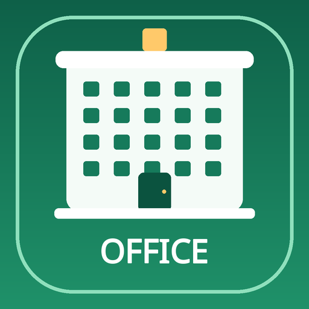

Office ReadyWorkplace challenge game
💎 0
BUILD YOUR WORKPLACE SKILLS
Ready for your first challenge?
Practice real workplace moments, choose your response, and learn as you play.
- Play 10 fresh challenges each round.
- Score 7 or more to win 10 diamonds.
- Spend 5 diamonds to reveal a helpful hint.
Music starts after you press Play. You can turn it off anytime.
Your diamonds: 💎 0
💎 0 diamonds
ROUND COMPLETE
Your result
0 / 10
💎 +10 diamonds added!
Your diamonds are saved on this device.